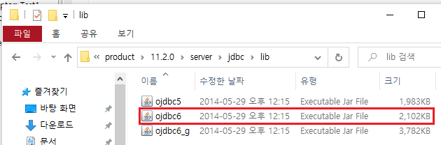
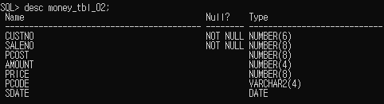

1. DB를 연결하기전에 C드라이브 oraclexe에서 jdbc6.jar 파일을 찾자
경로 : C:\oraclexe\app\oracle\product\11.2.0\server\jdbc\lib

2. 이 jdbc6.jar 파일을 이클립스의 WEB-INF/lib 경로 안에 넣어준다
3. 이제 jar 라이브러리를 넣어주었으니 DTO DAO를 만들자
우선 DTO는 아까 oracle의 테이블의 자료형을 확인하면서 만들어주자
기본생성자, Getter Setter, toString()까지 정의해주자


4. DAO를 통해 oracleDB와 이클립스를 연결해주는 작업을 하자
아래는 기본생성자에 선언되는 기본적인 DB연결에 관한 코드다
5. 회원등록 틀을 구현하기위해 DAO에 INSERT를 구현해준다
6. DAO에서 만든 INSERT를 join.jsp에 적용하기위해
회원 가입 틀을 작성해주자. 회원번호는 자동부여이므로 disabled 처리하였다
7. 6에서 만든 회원가입틀에 빈칸 입력에 대한 유효성검사를 위한
JavaScript isValid()함수를 선언해주자
isValid()함수는 제출 버튼에 기능을 부여해준다
8. 가입일자를 자동으로 입력되도록 계산하기 위해 jsp 코드를 사용하자
9. form의 내부 속성값에 method와 onsubmit 등을 수정해준다
action의 proc/joinproc.jsp는 다음 10번에서 작업할 예정이다
10. proc/joinproc.jsp를 만들어 form에 입력한 값을 받아 db로 전달할 수 있게 만들어주자
11. 서버를 새로 켜고 회원등록에서 정상적으로 insert가 되는지 확인해보자